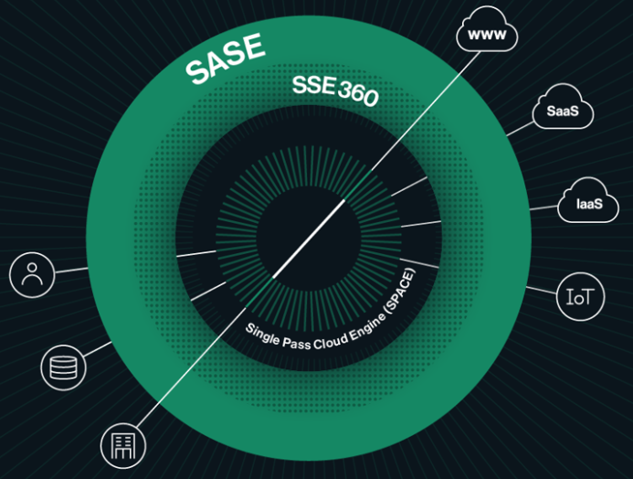
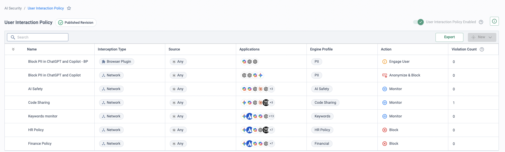
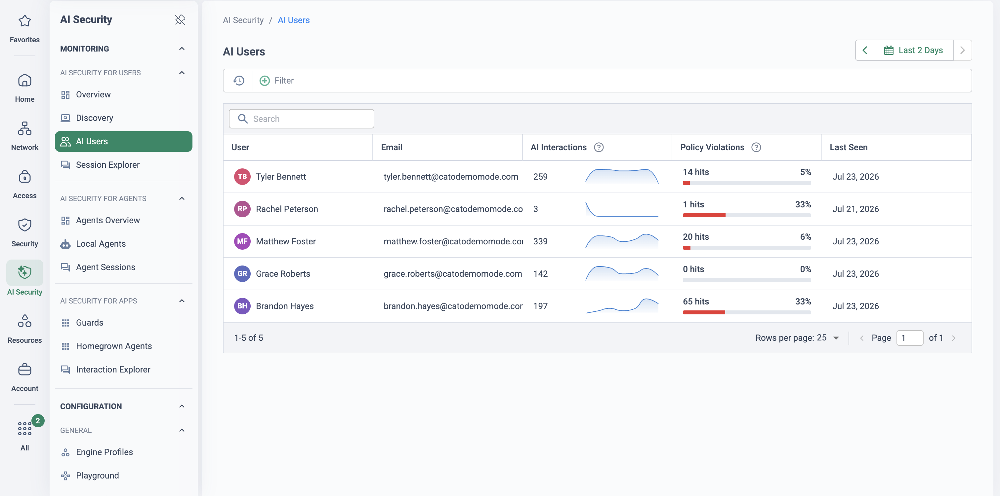

Why this matters
The source deck (AI_Security-Use_Cases.pptx, last changed 13 Mar 2026) is still marked work in progress, and the separate AI Security PoV deck (8 Dec 2025) is still the generic Visibility PoV story. The demo and PoV runbooks below were written for this library from the KB, not taken from either deck.
GenAI adoption has outrun governance in almost every organisation. Security teams are being asked three questions they usually cannot answer: which AI tools are our people using, and what are they putting into them? What have our developers built on top of LLMs? And what are the agents we are starting to deploy actually doing with the access we gave them?
The objective of this use case is to show that Cato answers all three with one platform: see every AI touchpoint — user, application and agent — then audit and govern it with the same policy engine that already secures the rest of the traffic.
Focus areas for the demonstration
The deck structures the AI security conversation into three focus areas. Each has its own scenarios, its own demo mechanics and its own measurable outcomes — pick the one that matches where the prospect is on their AI journey, and use the other two to show breadth.
AI for Users
Scenarios
- Shadow-AI discovery
- Prompt-level auditing
- Protection policies
Demo focus
Visibility and protection via the browser plugin and the Cato Client.
Outcomes
- Discovery of AI applications
- Usage reporting
- Risk & compliance reporting
AI for Applications
Scenarios
- Homegrown app inventory
- Coding-agent discovery
- Protection policies
Demo focus
IDE integration plus hooks-based visibility and protection.
Outcomes
- Discovery of homegrown applications
- Tool discovery
Agentic AI
Scenarios
- Agent discovery
- Posture management
- Guardrails
Demo focus
Visibility and protection via APIs.
Outcomes
- Agent observability
- Runtime controls
“Which GenAI tools are your users signed into right now — and if someone pasted customer PII into one of them yesterday, could you produce the prompt today?”
Where this sits in the Cato SASE platform
- Employees reach public GenAI through the Cato Client or the browser plugin; shadow AI is discovered first.
- SPACE evaluates every prompt and upload against one set of AI policies: monitor, anonymise or block.
- Homegrown apps and agents join the same engine through IDE integration, hooks and APIs.
- Discovery, usage and risk & compliance reporting land in the Cato Management Application.
One platform, three AI surfaces
AI security is not a bolt-on product in the Cato architecture — it is another set of policies evaluated by the Single Pass Cloud Engine (SPACE) at the core of the SASE cloud. Because employee, application and agent traffic already traverses the platform, Cato can discover AI usage, audit it at prompt level, and enforce protection policies without new appliances or traffic re-plumbing.

What the platform delivers per surface
Shadow-AI discovery
The Cloud Apps Dashboard and CASB app catalogue surface every GenAI tool in use — attributed to users, scored for risk, with no agents to deploy beyond what is already there.
Prompt-level auditing
Record what users actually asked and uploaded — via the browser plugin and Cato Client — turning “we think people use ChatGPT” into usage, risk and compliance reporting.
Protection policies
CASB application control by AI category plus DLP on prompts and file uploads: allow sanctioned tools, restrict risky activities, block sensitive data leaving the organisation.
Agent observability & runtime controls
For homegrown apps and agentic AI: inventory via IDE integration and hooks, agent discovery and posture management via APIs, with guardrails enforced at runtime.
How to run the demo
The source deck names demo focus areas but has no step-by-step script, so these steps are built from platform capability. Tailor them to the audience; the scripted, KB-grounded pilot is the PoV runbook below.
-
Discover shadow AI
Monitor → Cloud Apps Dashboard
Filter the dashboard to the Generative AI category. Show which AI apps are in use across the tenant, who is using them and how much data is moving — this is the discovery moment: most organisations find far more AI tools than they ever sanctioned.

The same discovery moment on the dedicated GenAI Apps dashboard (Security → GenAI Apps; example tenant): apps found, the sanctioned-versus-unsanctioned split, users and data violations up top, then the top apps with their classification. Open on the unsanctioned count. -
Drill into a risky app
Security → CASB
Open the catalogue entry for one of the discovered tools and walk its risk attributes — data handling, compliance posture, risk score. This grounds the conversation about which AI apps deserve “sanctioned” status and which do not.
-
Build the protection policy
Security → CASB
Create an application-control rule scoped to the AI category: allow the sanctioned tool, restrict or block the rest. Emphasise granular activity control — permit browsing and prompting while blocking file upload — rather than a blunt category ban.
-
Add DLP for prompts containing PII
Security → DLP Configuration
Create a DLP rule that inspects prompts and uploads to GenAI apps for PII and payment data. The blocked credit-card upload to Microsoft Copilot shown on the DLP forensics page is exactly this control in action — reuse it as your proof point.
-
Close the loop with reporting
Monitor → Data Protection Dashboard
Show usage reporting and risk & compliance reporting: which AI apps, which users, which policies fired. “Discovery of AI applications” becomes an ongoing governance report, not a one-off audit.
-
Position the road ahead: applications & agents
For homegrown apps and coding agents (IDE integration, hooks-based visibility) and for agentic AI (API-based agent discovery, posture management, runtime guardrails), talk to the focus-area cards above rather than demoing live — this is the evolving edge of the story.
How to prove it in the customer's tenant
This is deliberately the light one — a one-to-two-week AI-security starter pilot whose job is orientation and routing, not depth. It proves the platform sees the customer's real AI usage, moves exactly one control from monitor to enforcement, and ends with a decision about which deeper pilot to run next — each of those has its own full PoV runbook on the sibling pages linked below. Agree the success criteria before configuring anything; the frame for that conversation is Running a Cato PoV.
| Success criterion | What is demonstrated | Evidence artefact | Where it lives |
|---|---|---|---|
| Shadow-AI discovery week delivers the inventory | The AI application inventory built from the customer's real traffic — which AI apps, how widely used, which are higher-risk. Discovery is passive: nothing blocked, no prompt content read. | Dated Discovery-screen screenshot + the inventory reviewed against what they thought was in use | AI Security → Monitoring → Discovery |
| One rule taken monitor → anonymise | A single User Interaction Policy rule on one AI app and one pilot group moves from Monitor to Anonymize and Monitor, with before/after evidence. | Monitor-mode detection counts (before) + an anonymised prompt from the user's side (after) | AI Security → User Interaction Policy |
| GenAI dashboards populated and walked | Overview and AI Users dashboards showing the customer's own numbers — apps, users, interactions, adoption and violation rate — walked live in a sync. | The walkthrough itself, plus dated dashboard screenshots into the evidence doc | AI Security → Monitoring → Overview |
| Route-map decision made | The findings point at the next engagement: end-user GenAI enforcement, agentic AI, or the structured Visibility Assessment. | A written next step, with an owner, in the wrap-up notes | Wrap-up meeting |
- Licence: the KB is explicit that AI for End Users and AI for Applications are separate per-user licences (Getting Started with AI Security). This starter pilot runs entirely on the End Users side — arrange the trial with your SE and CSM.
- TLS inspection staged for the interaction step. TLS Inspection must be enabled at the account level for the User Interaction Policy to inspect AI traffic (Working with the User Interaction Policy) — stage it per the TLS Inspection: Staged Rollout Playbook. Discovery itself is network-level and does not read prompt content, so the inventory starts building while the TLSi conversation is still running.
- Internet Firewall inspecting the traffic, with the default QUIC rule enabled — the KB's second prerequisite alongside TLSi (Working with the User Interaction Policy). The policy only sees prompts that arrive as inspectable TLS; a browser or app allowed to use QUIC over UDP bypasses inspection entirely. Cato creates the QUIC and GQUIC block rules the first time TLS inspection is switched on — confirm nobody has since disabled them.
- Identity integration syncing the pilot group — the inventory and dashboards should say "Priya uses these five AI apps", not "an IP address does".
- Prompt privacy approved up front: whoever owns privacy signs off what interaction data is captured and who may view it — before the first rule, not after.
Configuration walkthrough
-
Let discovery soak — nothing to deploy, nothing blocked
AI Security → Monitoring → Discovery
Shadow AI Discovery classifies the traffic Cato already carries against AI application signatures, domains and behavioural patterns — the KB states it "does not block traffic by default, and it does not inspect the content of AI prompts or responses" (What is Shadow AI Discovery). Give it a week of real traffic, then read the inventory back with the customer: which AI apps are in use, how widely, and which are higher-risk. The gap between "apps we sanctioned" and "apps we found" is the moment this pilot earns its keep.
-
Create one User Interaction Policy rule — in Monitor
AI Security → User Interaction Policy
One rule only: source = the pilot group, application = one AI app the inventory shows in real use, an engine profile to evaluate prompts, action = Monitor, plus a notification template. Let it gather detections for a few days — that detection count is the "before" evidence, and it tells you whether the engine profile matches what the customer actually cares about.

The rulebase in the state this step describes (lab tenant): Monitor rules sitting alongside the Engage User, Anonymize and Block rules they will eventually justify, each tied to a named engine profile — and a Violation Count column that is the whole point of the monitor week. Here the Code Sharing profile has registered its first detection; by the review that column is the argument for what to enforce and what to leave alone. -
Flip the rule to Anonymize and Monitor — the before/after moment
Change that one rule's action to Anonymize and Monitor: sensitive values are masked in-flight and the prompt still goes through, so the pilot user keeps working while the data stays home. Have a pilot user — "Marcus" — submit a prompt seeded with fictional PII and capture what the AI app actually received. Note the rule precedence point from the KB: AI Interaction Policy rules take precedence over TLS inspection bypass rules.
![ChatGPT conversation where the submitted prompt reads 'Redraft this notice for [NAME_1], DOB 01/01/1988, email [EMAIL_1], account [BANK_ACCOUNT_NUMBER_1]' — the name, email address and bank account number replaced by anonymisation tokens before reaching the model, with ChatGPT replying normally.](../assets/img/genai-anonymised-prompt.png)
What the "after" evidence looks like (example capture, fictional data), from the user's side of the glass: the name, email address and bank account number were masked in-flight by the Anonymize action, the tokens are what the model received, and the conversation carries on. (The DOB passed through — it isn't in the detector set — which is exactly the kind of finding the deeper end-user pilot exists to tune.) -
Walk the dashboards with the customer
AI Security → Monitoring → Overview AI Security → Monitoring → AI Users
Thirty minutes, their data on screen: total AI apps, AI users, interactions and adoption rate up top, the AI Violation Rate as the one-number risk posture, violation breakdown by rule, the latest-application-discovered feed and topic popularity (Overview Dashboard). Then AI Users to put names against the numbers. Dated screenshots into the evidence doc as you go — this walkthrough is a success criterion in its own right.

AI Users, the names behind the numbers (example tenant, fictional identities): interactions, violation hits and rate, and last seen per person. In the pilot this view shows the customer's own cohort. 
Worth showing during the walkthrough as the shape of what comes next (example tenant): a published User Access Policy tiering access by risk — engage, redirect, block — evaluated before the interaction policies this pilot exercised. Building it out belongs to the deeper end-user pilot, not this one. -
Make the route-map decision
Close the wrap-up by choosing the next engagement — the findings usually make the choice obvious. Each route below carries its own full PoV runbook:
End-user GenAI
The inventory is large, the violation rate is real, and the customer wants enforcement: the full monitor → coach → redact → enforce lifecycle, the browser plugin and the DLP backstop.
Agentic AI
The conversation kept drifting to coding agents, Copilot Studio or agents the customer builds: agent inventory with Scout, session auditing and runtime guardrails.
Visibility Assessment
Governance needs a board-ready artefact before anything is enforced: the packaged four-week assessment, monitor mode only, ending in an AI risk report mapped to NIST AI RMF, ISO/IEC 42001 and the EU AI Act.
Troubleshooting
Interaction data isn't appearing
The usual cause is TLS inspection: it must be enabled at the account level before the User Interaction Policy can inspect AI traffic. Check Security → TLS Inspection and confirm the pilot group's traffic is in inspection scope. Second check: the Internet Firewall's default QUIC block rule is still enabled — with it off, the browser and the AI app can talk QUIC over UDP and the prompt is then never TLS-inspected, so the policy never sees it.
A feature you expected isn't licensed
AI for End Users and AI for Applications are separate per-user licences. Agent- and homegrown-app capabilities sit on the Applications side — out of scope for this starter pilot; confirm the trial covers what you promised before promising it.
Inventory shows IPs, not people
Identity integration isn't syncing the pilot group. Fix the IdP sync before the dashboard walkthrough — anonymous rows undercut the whole "who is using what" story (see Identity Integration Design).
Anonymise isn't available on a rule
If the tenant sees AI traffic through the AI Security API Integration module, the KB notes the User Interaction Policy supports monitoring actions only. The monitor → anonymise step needs inline traffic through a Cato PoP.
Gotchas & exit
Exactly one rule ever leaves Monitor in this pilot, and only as far as Anonymize and Monitor, on one app and one group. Nothing blocks. If the customer pushes for enforcement breadth, more detector tuning or agent coverage, that is the route-map decision asserting itself — take the ask to the relevant deeper PoV rather than growing this one.
Exit is deliberately clean: set the pilot rule back to Monitor (or disable it), keep discovery running — it is passive and costs the customer nothing operationally — and record the route decision with an owner and a date. The evidence pack (inventory, before/after prompt, dashboard screenshots) becomes the opening exhibit of whichever deeper pilot comes next.